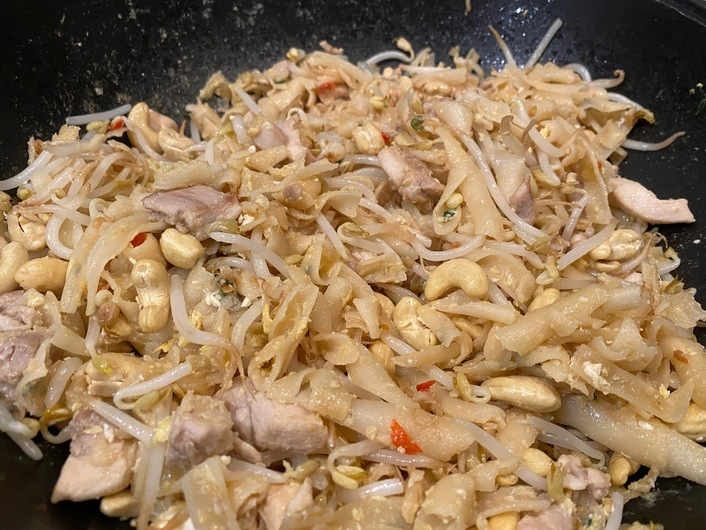

Pad Thai
 Meat
Meat

- rice-stick noodles
Soak the noodles in warm water for 10mins and then drain
- 2 tbsp oil
- 2 garlic cloves
- 2 chillies
- 200g chicken or pork
Stir fry oil, garlic, chillies and meat for 2-3 min
- chives
Add the chives and noodles, cover and cook for 2 mins
- 2 tbsp fish sauce
- lime juice
- 2 tsp brown sugar
- 2 eggs (beaten)
Add fish sauce, lime juice, sugar and eggs
- 115g bean sprouts
- 115g unsalted peanuts
- crispy fried onion
Stir in beansprouts, peanuts and serve with fried onion